WORKSHOPS ARCHIVE / أرشيف الورش
المهارات التي تساعد الفرقة على الاستمرار.
Skills that help a company keep going.
الورش ليست نهاية الطريق. هي الأدوات التي تحتاجها الفرقة عندما تبدأ في بناء تجربتها الخاصة.
The workshops are not the destination. They are the tools a company needs when it starts building its own practice.
01 · CAPACITY
ورشة الإدارة الثقافية
Cultural Management Workshop
ورشة لبناء المهارات الإدارية للفرق والمجموعات الثقافية، وتطوير أسس التخطيط وتحديد الأهداف والرؤية والرسالة، مع التعرف على كتابة المشروعات وفرص الدعم.
A workshop for developing management skills for cultural groups, covering planning, goals, vision and mission, project writing and support opportunities.
إدارة ثقافيةCultural ManagementProject Writing
02 · VISION
ورشة الإخراج
Theatre Directing Workshop
ورشة متخصصة في الإخراج المسرحي ضمن مسار بناء قدرات الفرق، تجمع بين التفكير الإخراجي والتطبيق العملي.
A theatre directing workshop within the capacity-building track, combining directorial thinking with practical application.
إخراجDirectingDirectorial Vision
ARCHIVE · سيتم إضافة التوثيق البصري لهذه الورشة لاحقًا.
03 · VISUAL LANGUAGE
ورشة السينوغرافيا
Scenography Workshop
ورشة متخصصة في السينوغرافيا، باعتبارها جزءًا أساسيًا من بناء الصورة المسرحية وتطوير العرض.
A specialized scenography workshop focusing on visual composition as an essential part of building a theatrical production.
سينوغرافياScenographyVisual Language
ARCHIVE · سيتم إضافة التوثيق البصري لهذه الورشة لاحقًا.
04 · RESOURCES
ورشة جمع التمويلات
Fundraising Workshop
ورشة حول فرص التمويل والميزانية، تساعد الفرق على فهم الموارد اللازمة للمشروعات الفنية والتعامل معها بصورة أكثر تنظيمًا.
A workshop on funding opportunities and budgeting, helping theatre groups understand and organize the resources needed for artistic projects.
جمع تمويلاتBudgetingFunding Opportunities
ARCHIVE · سيتم إضافة التوثيق البصري لهذه الورشة لاحقًا.
05 · STORY
ورشة الكتابة المسرحية
Playwriting Workshop
مع الفنان محمود جمال الدين. ورشة متخصصة في الكتابة المسرحية، موثقة من خلال جلسات تدريب ومناقشات عملية مع المشاركين.
With Mahmoud Gamal El-Din. A playwriting-focused workshop documented through training sessions and practical discussions with participants.
كتابة مسرحيةPlaywritingPractical Training
06 · PERFORMANCE
ورشة التمثيل
Acting Workshop
مع الفنان كيرو صابر. ورشة عملية لبناء أدوات الممثل من خلال الحركة والأداء والارتجال والعمل الجماعي والتطبيق داخل مساحة المسرح. الصور المتاحة توثق خمسة أيام من الورشة.
With Kiro Saber. A practical acting workshop focused on movement, performance, improvisation, ensemble work and stage practice. The available archive documents five workshop days.
تمثيل / Actingارتجال / ImprovisationEnsemble Work
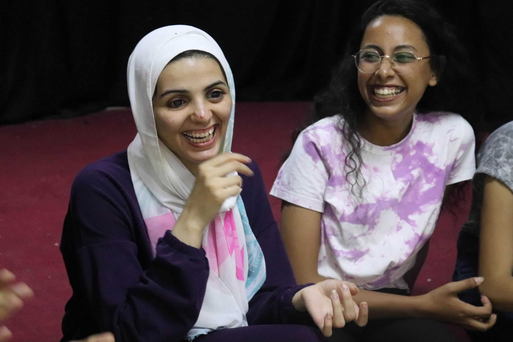
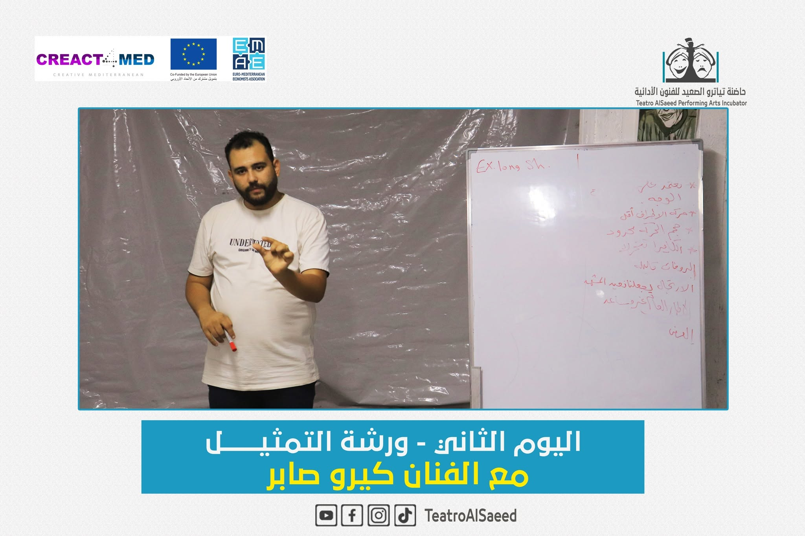
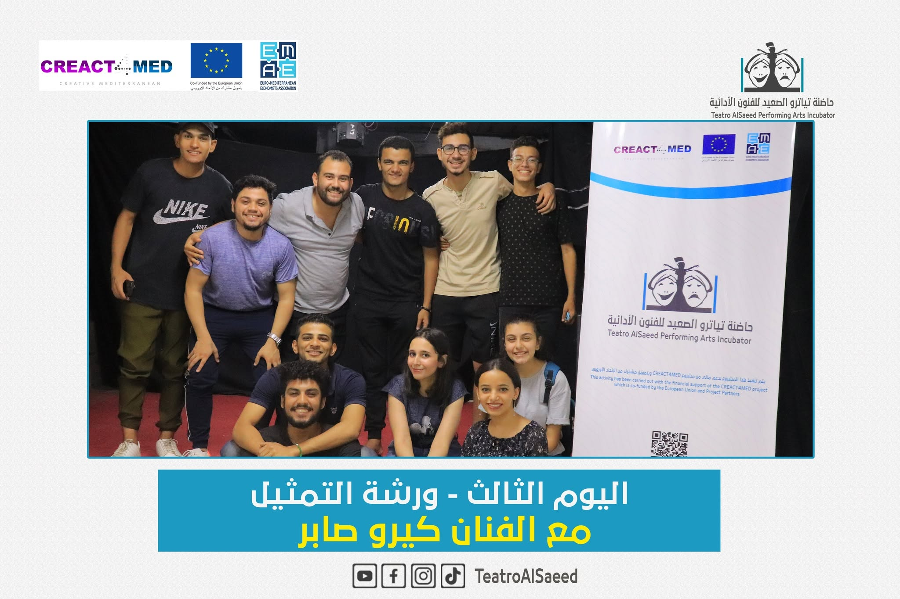
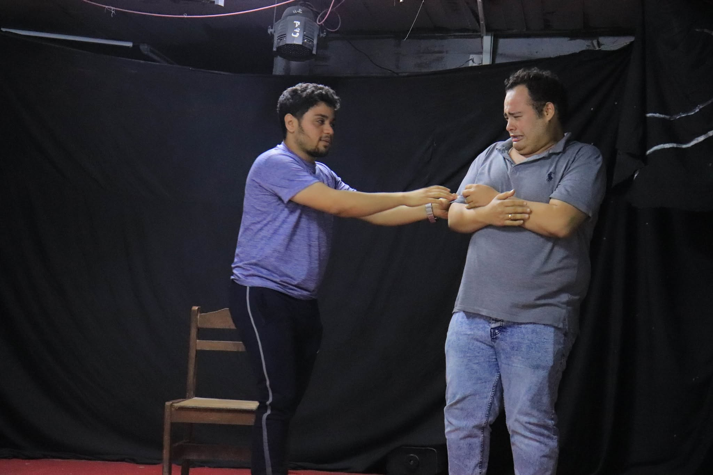
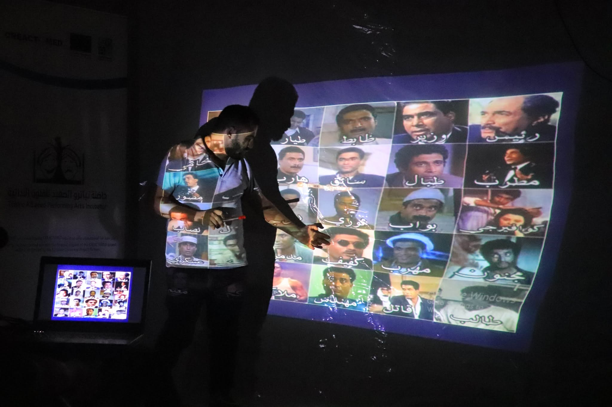

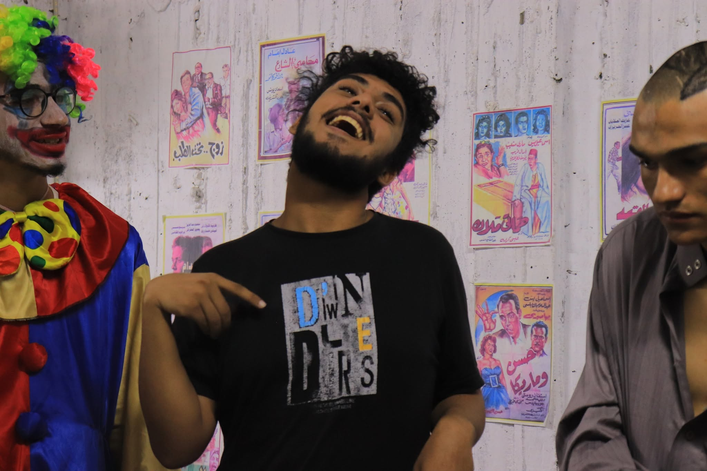
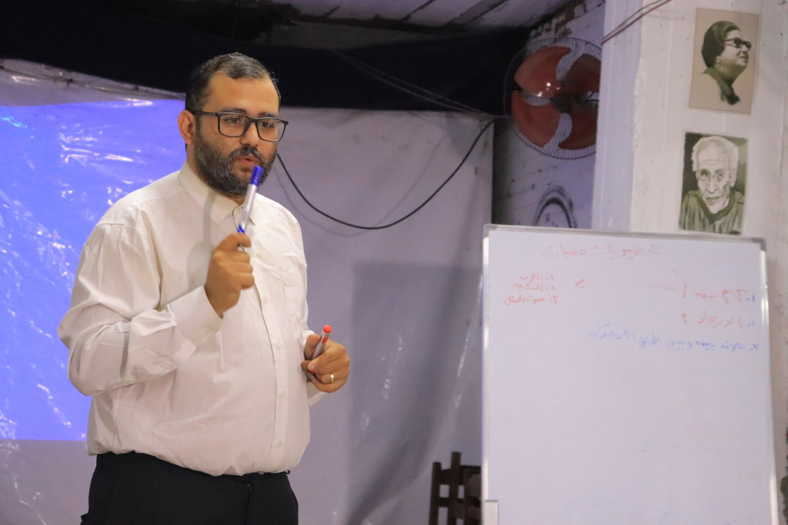
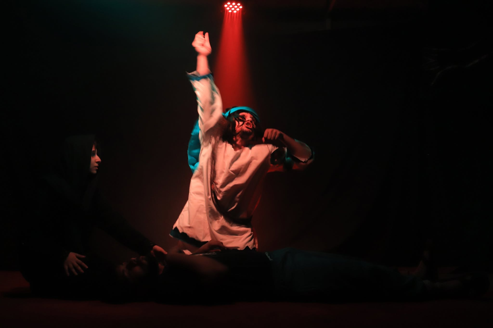
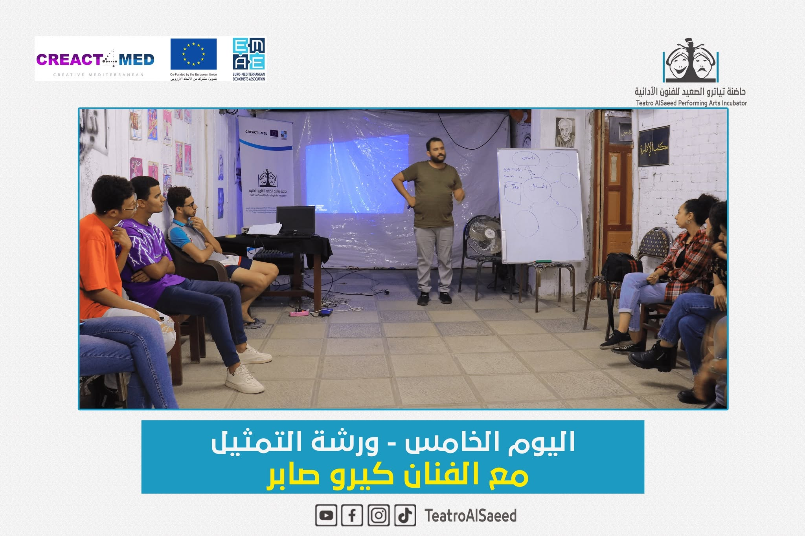
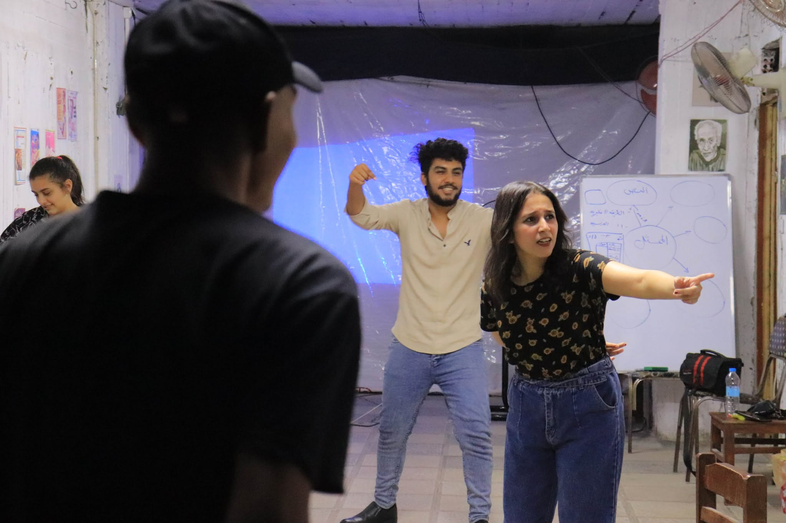
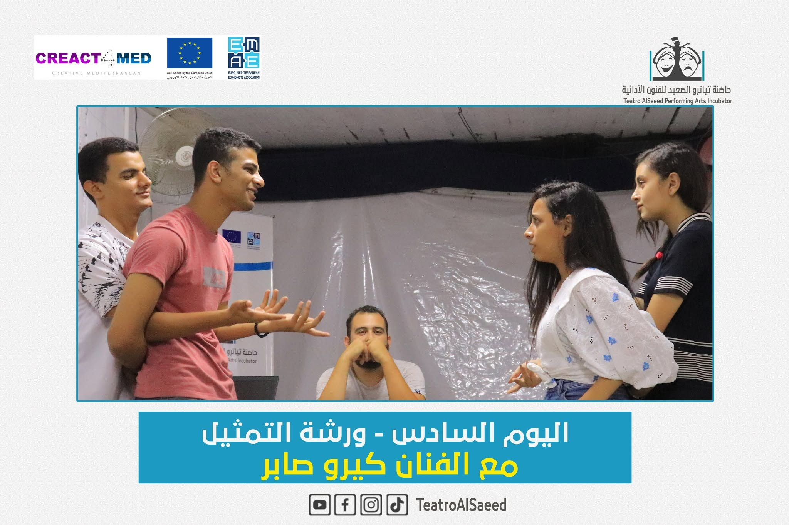
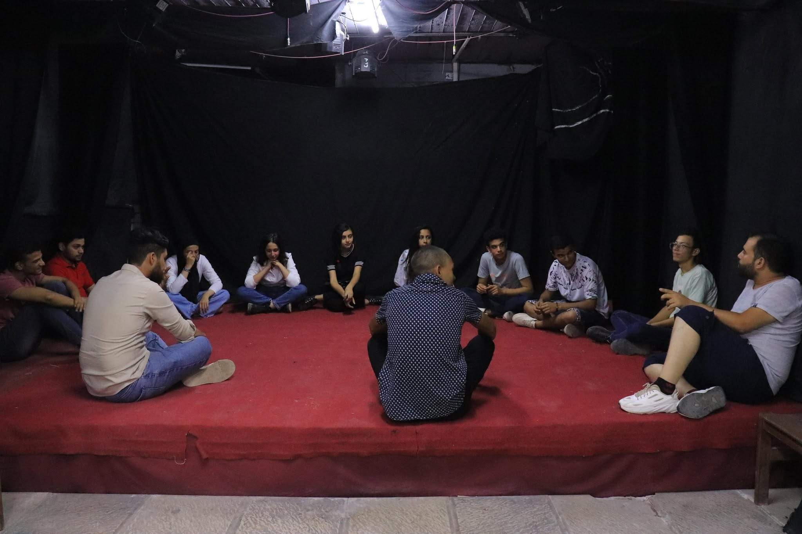